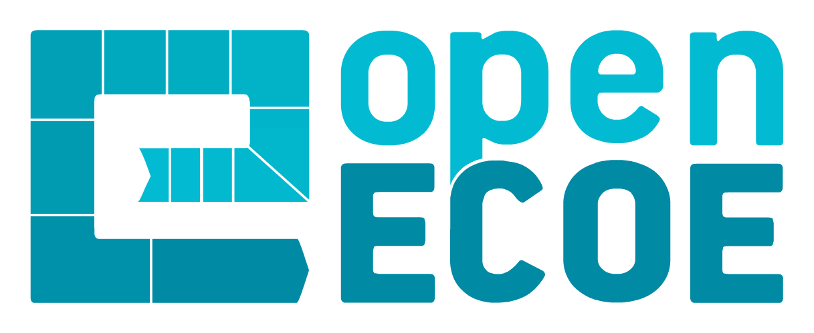

<nz-layout class="layout">
  <nz-header>
    <div style="display: flex; gap: 10px">
      <a (click)="isCollapsed = !isCollapsed" style="font-size: 30px;">
        <i nz-icon [nzType]="isCollapsed ? 'menu-fold' : 'menu-unfold'"></i>
      </a>
      <a routerLink="/ecoe" title="{{'BACK_ECOE' | translate }}" style="display: flex; align-items: center;">
        
      </a>
      <app-change-organization *ngIf="isLoggedIn()"></app-change-organization>
    </div>
     <!-- 🌐 SELECTOR DE IDIOMAS -->
    <nz-select 
      style="width: 120px;"
      [(ngModel)]="language"
      (ngModelChange)="changeLang($event)"
    >
      <nz-option nzValue="es" nzLabel="Español"></nz-option>
      <nz-option nzValue="en" nzLabel="English"></nz-option>
    </nz-select>
    
    <div style="display: flex;" *ngIf="isLoggedIn()">
      <app-submenu [submenuSelected]="'ECOE'"></app-submenu>
      <app-usermenu></app-usermenu>
    </div>
  </nz-header>

  <nz-content>
    <div class="long-div" #TopDiv>
      <div class="inner-nz-content long-div-inner">
        <router-outlet></router-outlet>
      </div>
      <nz-footer>
        <p>openECOE {{year}} - Universidad de Valencia-Sergio Cubero</p>
      </nz-footer>
      <nz-back-top [nzTarget]="TopDiv" #backTop></nz-back-top>
    </div>
  </nz-content>
</nz-layout>

<nz-drawer  [nzVisible]="isCollapsed"
            [nzPlacement]="'left'"
            [nzWidth]="320"
            (nzOnClose)="isCollapsed = !isCollapsed"
            [nzBodyStyle]="{'padding':'0'}">
  <app-menu (menu_close_event)="toCollapse($event)"></app-menu>
</nz-drawer>